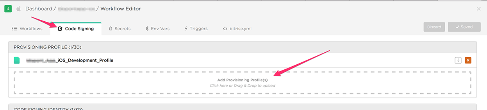
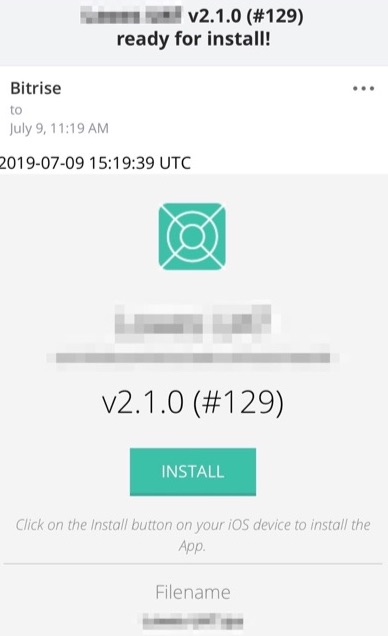

Add Test Device To Bitrise Manually
This blog post is use to add a test device for a beta testers. Assume you don’t own the device and will need to add a test device remotely. Even if you own the device, you can still follow this guide.
Get UDID
First you will need to get the UDID for the testing device. SuperUDID is the fastest way to find your iOS device UDID - Beta Family this is a very useful tool to get the UDID for the testing device.
Register Device
First, register your device
Register Device With Apple
Register a single device - Apple Help
Login to apple developer account, in Certificates, Identifiers & Profiles, select device from the sidebar and click the add button. Select the platform, enter a device name (for your own reference), and the device ID (UDID). Click continue and review the registration information and click Register.
After register the device, you will need to add registered device to your provisioning profile
Update Provisioning Profile
Login to apple developer account, in Certificates, Identifiers & Profiles, select profiles on the sidebar. Find the corresponding ad-hoc distribution profile, on the bottom, select the device you just registered.
Now click save and download to download the changed profile.
Login to Bitrise. Open your app, select Workflow -> Code Signing, find the ad-hoc PROVISIONING PROFILE that you just edited in apple developer console, delete that and drag-in the updated file you just downloaded.

Register Device with Bitrise
First make sure you have registered device with apple and finish updating the Provisioning Profile.
Open your bitrise account settings profile’s Test Devices here. Click register manually. Enter a device name for your own reference and the deviceID (UDID).
Now your device has successfully registered with Bitrise. To ensure, you can go to the Workflow -> Code Signing, find the specific ad-hoc profile, click on Show matching Certificates, Devices & Capabilities, and select Devices on the sidebar. Search for the UDID you just registered and you will see a REGISTERED ON BITRISE BY … on the right.
Share Build to Client/Testers
Now once you have add tester’s device to your ad-hoc licence, you can then go-ahead, make a build and share that build to your tester so they can install the build on their device. When making that build, first please make sure the build is signed using the ad-hoc provisioning profile contain the tester’s device.
After made the build, click APPS & ARTIFACTS. Click on the eye button to view the detail of generated .ipa, scroll down and you will see a email sharing section. Write your tester’s email address, they will be received a email with a download link.

Then they can click on the INSTALL button to install on their devices.